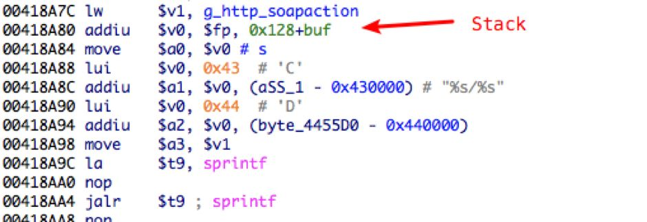

CVE-2018-5318：D-Link soap.cgi Stack Buffer Overflow
1. 前言
老板前一段给买了几款路由把玩，研究了下 D-Link DIR 629、DIR 823 这两款板子。
发现在 soap.cgi 中存在几处栈溢出，均可以远程利用，并且其他型号的路由也有对 soap 这一部分代码的复用。
2. 逆向分析与漏洞挖掘
因为是想挖几个能远程利用的洞，首先去看了 HTTP 服务，也就是 /htdocs/cgibin。
D-Link HTTP 服务由 cgibin 提供，并通过软链接的文件名进入到不同的处理分支：
在各个 cgi 处理函数中，会通过 cgibin_parse_request 来解析用户输入，其函数原型大致如下：
参数 save_param_func 用于传入解析/存储 HTTP 请求的具体 handler，读取 HTTP 请求后使用该 handler 具体处理用户输入。在 soapcgi_main (0x00418E28) 中传入了漏洞函数 vulnerable_sprintf_parser(0x0041893C)：
跟进 vulnerable_sprintf_parser 可以发现程序未进行边界检查便将全局变量 g_http_soapaction 通过 sprintf 写到栈上：

g_http_soapaction 来自于 soapcgi_main 中对 HTTP Header SOAPACTION 字段的解析：
取 HTTP_SOAPACTION：
取 # 后的值：
至此漏洞原理已经明了：soapcgi_main 中未进行边界检查便将 HTTP Header 中的 SOAPACTION 字段存储至栈上，导致栈溢出。
3. 漏洞利用
基础信息：
MIPS 大端序，开启了 NX，未开启 ASLR、PIE，只需要做个 ROP。
溢出的崩溃现场如下：

$S0、$S2-S3、$FP、$SP 指向的内存可控，要编写 ROP 只能在这几个寄存器上做文章，最终用 ropper 在 uClibc 中找了个很不错的 gadget：
现在需要做的就是找到 libc 加载的实际基址。
在隔壁开锁王师傅的指导下把板子拆开，接上串口：
成功获取到 shell：
拿到 shell 后读 /proc/pid/maps 就可以获取到libc的加载基址。
最终编写 ROP 如下：
攻击演示：